Auxiliar 16: Circuitos Resistivos
Las leyes de Kirchhoff son la aplicación macroscópica de la conservación de carga y energía a redes de resistencias. Permiten analizar circuitos de cualquier topología de forma sistemática.
Temas que cubre
- Primera ley de Kirchhoff (nodos): conservación de carga
- Segunda ley de Kirchhoff (mallas): conservación de energía
- Resistencias en serie: $R_{\text{eq}} = \sum R_i$
- Resistencias en paralelo: $R_{\text{eq}}^{-1} = \sum R_i^{-1}$
- Divisor de voltaje y divisor de corriente
- Potencia disipada en cada resistencia
Conceptos clave
1ª Ley de Kirchhoff (nodos)
La suma de corrientes que entran a un nodo es igual a la suma de las que salen: $\sum I_{\text{entra}} = \sum I_{\text{sale}}$. Es conservación de carga en estado estacionario.
2ª Ley de Kirchhoff (mallas)
La suma de caídas de voltaje en un lazo cerrado es cero: $\sum \Delta V = 0$. Equivale a que el campo eléctrico es conservativo → el trabajo en un lazo cerrado es nulo.
Serie vs Paralelo
En serie: la misma corriente pasa por todas las resistencias, los voltajes se reparten. En paralelo: el mismo voltaje en todas, las corrientes se reparten. El equivalente siempre es menor al menor en paralelo.
Divisores
Divisor de voltaje (serie): $V_k = V_{\text{total}} \cdot R_k/R_{\text{eq}}$. Divisor de corriente (paralelo): $I_k = I_{\text{total}} \cdot R_{\text{eq}}/R_k$ o equivalentemente $I_k = I_{\text{total}} \cdot \frac{R_j}{R_j + R_k}$ para dos ramas.
Fórmulas fundamentales



Qué hay que entender
- Identifica nodos y mallas. Asigna corrientes con dirección (si resulta negativa, va al revés).
- Escribe la ecuación de nodos para cada nodo independiente (descarta uno: es redundante).
- Escribe la ecuación de mallas para cada malla independiente.
- Resuelve el sistema lineal resultante. Verifica sumando potencias: $\sum P_{\text{fuentes}} = \sum P_{\text{resistencias}}$.
- Simplifica primero con equivalentes serie/paralelo cuando sea posible.